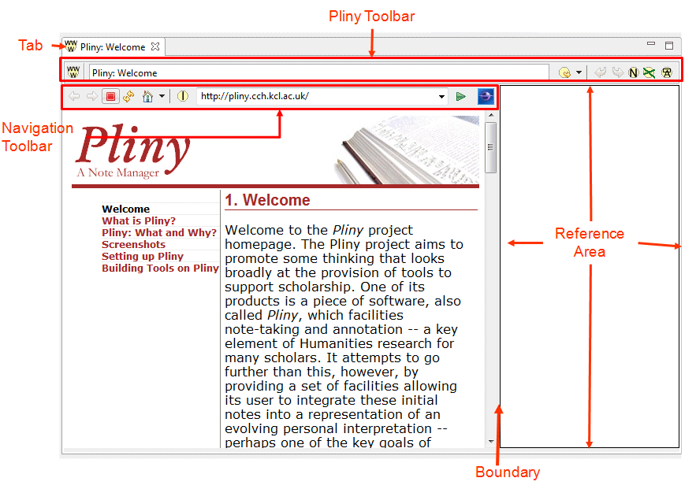
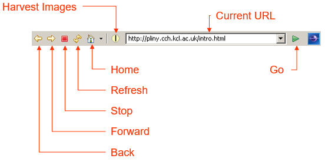
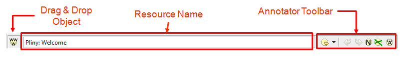
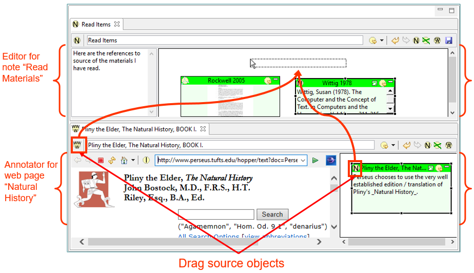

This section provides a reference section for the embedded Web Browser.
If you are unfamiliar with how to use the browser within Pliny, see
the tutorial on this subject.
What's it for
Pliny's embedded Web Browser should be invoked whenever you wish to
attach Pliny resources such as notes to a web page. Although a web browser
(configurable in Eclipse, but generally it will be an established browser
already on your computer such as Internet Explorer or FireFox). It is an
editor, so it will launch an editing space in the editor pane.
Starting the Browser
Pliny's embedded web browser can be started in any of three ways:
- Click on the Browser icon from the Eclipse main toolbar:
. Unless you have changed your
home page setting (see how to do that in the section Browser Controls,
below), the browser will start with http://pliny.cch.kcl.ac.uk as its
default "homepage".
- Choose the "open" action from any reference to a web page
(identified with in its top left
corner). This will cause Pliny to launch the web browser and point it at the
web page to which the reference refers.
- Choose a web page reference from the resource explorer. Pliny will
launch the web browser and point it at the web page the reference
specified.
If you shut down Pliny (or Eclipse if you are using Pliny as a plugin)
when the browser is open, Pliny will remember that the browser was running at
the time, and will reopen it when it is restarted at the page it is currently
showing.
Screen components
Here is a typical display of the embedded Web Browser, with its parts
labelled:

The embedded browser appears with Pliny's standard toolbar at the top,
and two major areas below it divided by a bounday (labelled "Boundary" above).
- To the left is the browser area. Web pages fetched by the
browser appear in the large bottom left area. You can operate in this area
exactly as you do in your normal browser -- clicking on links that appear for
example to navigate to another web page. The top area (labelled "Browser
Controls" above) contains buttons that control the browser. See details about
their description in the subsection Browser Controls below.
- To the right is the reference area associated with this
page. You can create references to notes in this area that you wish to
associate with the browser page you are seeing at any time. Whenever you return
to this same page your associated notes will reappear here.
Tab
A row of tabs appear at the top of this pane, as it does above any
of Pliny's annotators/editors. The highlighted one (in the figure, "Pliny:
Welcome") belongs to the main screen area below. The "X" icon can be clicked on
to close the object. The name that appears in the tab is one of two
possibilities:
- If the web page is already stored as a Pliny resource, then the
name of the resource will appear here.
- If the page is being displayed from the WWW, but is not currently
a Pliny resource, then the name here is the name your browser would normally
show as the page's name -- often the page's "title", but perhaps the page's URL
if it doesn't have a title.
Boundary
The reference area is separated from the browser areas by a
boundary. Drag the boundary area left or right to change the proportion of
screen are given to the two portions.
Browser Controls
The browser has its own toolbar area, and it looks like this:

The areas on it are:
- Back Button: This is the normal browser "back"
button.
- Forward Button: This is the normal browser "forward"
button.
- Stop Button: This is the normal browser "stop"
button.
- Refresh Button: This is the normal browser "refresh page"
button.
- Home Button: This is the normal "home" button. By default,
the home page for Pliny's embedded browser is
http://pliny.cch.kcl.ac.uk, but you can change this.
- Go Button: This is the normal browser "go" button.
- Current URL: This field is the place where the current URL
is shown. You can also use it to make the browser go to a new web page:
- You can type in the URL of the page, or paste a URL in from
an outside source.
- The Current URL area is a drop-down menu which lists page you
have referenced recently -- what in your regular browser is called the
history list. You can return to one of these pages by choosing it from
the list.
- You can drag a URL appearing in a browser outside of Pliny to
this area to make the Pliny browser go to the same page.
- Harvest Images: This is a button that, when pressed,
causes Pliny to look for suitable images on the current webpage and to turn
them into Image Resources that can be annotated. There is an example of its use
in the tutorial using Pliny with
Images.
Reference Area
This is the area where you can make notes about this webpage in the
form of references to notes or to other Pliny resources. The Reference area
provides a working 2D space for laying out the reference objects. There is more about the
Reference area here.
Pliny ToolBar
The toolbar for the Browser is Pliny's "Pliny Toolbar" and contains
tools that work with the Browser's Reference area. It looks like this, with its
parts labelled:

Looking left to right we find:
- First, there is the browser annotators Drag and Drop object.
The next section describes its use in the section "Out of the
Browser".
- To the right of this is a text field, labelled here the Resource
Name. When Pliny saves a reference to a web page, or the browser points to
a page that has a resource already attached to it, the name of the web page
resource is shown here. It can be edited to whatever you like. When a page is
newly loaded, the default resource name used is the web page's title (usually
shown in the browser's tab), and if the page has no title, the URL for the page
is used.
- To the right end of the Pliny Toolbar are the tools to support
annotation and notetaking, called here the Annotation Toolbar. The tools
and their icons are:
- : Use this
icon by clicking on the down arrow symbol () to its right rather than the icon itself.
Clicking the down-arrow will cause Pliny to generate a list of all resources
managed by Pliny that refer to the current page. To open one of these
resources, choose it from the list.
- : This icon allows you
to undo the previous action you have done in the Reference area. Undo can also
be chosen from the "Edit" menu, or requested using the standard keystroke for
your platform.
- : This icon allows you
to redo an action you have just undone in the Reference area. Redo is also
available from the "Edit" menu, or can be requested by the standard keystroke
for redo.
 : This icon allows
you to create a new note and a note reference for it that will appear in the
Annotation area. You can use it in two ways:
: This icon allows
you to create a new note and a note reference for it that will appear in the
Annotation area. You can use it in two ways:
- first click on the
button, then in the annotation
area drag over the area there that you wish to be used for the space the
reference is to occupy, or
- you can drag the
button itself into the annotation
area. This will give you a "standard size" note which you can later change its
size.
After Pliny has responded and created a reference and new
note for you, you will want to type in the note name and its text in the newly
created space. Each time a new note is created the "create new note" state is
cleared, and you must push the
again to create another note or drag a new note from the
button. There is a keyboard
shortcut that puts Pliny in "create new note" state as well: F5).
- : This icon
allows you to create a connection between two references (a line joining them).
A connection is usually used to represent some sort of conceptual connection
between the two items.. To establish a connection line first click on the
, then click in the reference
that should hold the start of the line, and drag to the reference where the
line should end. Each time you wish to create a new connection you must first
push the again. Keyboard
Shortcut: F6.
- : Click on this
icon to cause all the references in this reference area to be minimized.
Drag and Drop
An important element of Pliny's design was expressed in the work
involved in trying to make the creation of resources and references as
straight-forward as possible. To this end we have added various drag and drop
features to Pliny. We have already shown that references can be dragged about
in a reference area -- that is how you make use of the 2D space the reference
area provided to organise the notes. However, drag and drop can also be used to
copy materials from outside Pliny's integrated web browser into it, or from
inside the browser's reference area to other areas. Here is a summary of these
drag and drop features available in the WEb Browser:
Into the Browser
Here are the kind of things that can be dragged from elsewhere into
the browser's reference area:
- A reference to any resource can be dragged from the Resource
Manager to the 2D reference area. Pliny will interpret this as a request to
create a reference to that resource there. A reference to a note in the Note
Search View works the same way.
- If you have more than one editor open at the same time you can
drag a reference from one into the other by dragging the reference's drag
source object. See the figure in the section Out of the Browser to
see where the drag source objects are.
- Text can be selected from another program that supports Drag and
Drop (such as Word) outside of Pliny and dragged onto the reference area
attached to a browser page. Pliny will interpret this as a request to create a
note and a reference to it in the area. If the dragged text begins with a short
line of text that looks like a heading, Pliny will interpret this as the note's
title.
Finally, a URL can be dragged from an external browser into the
integrated browser's current URL field. This will cause the browser to
redirect itself to that page.
Out of the Browser
The integrated browser provides two kinds of drag source objects
that can be dragged from the note editor into another Pliny object. The
following figure shows them:

Here we see Pliny displaying a note in the top area and the browser
in the bottom (the help section "Dividing a Pane: docking" in the topic
Managing Panes describes how to split the Pliny
window in this way). The top part contains the note "Read Materials" and the
bottom is displaying the web page for Pliny the Elder's Natural History
from the Perseus project. A Pliny user can use one of the two drag source
objects shown to make a reference from something in the browser to the
reference area in the note.
- If the user wanted to insert a reference to Perseus's web page
Natural History in his/her "Read Materials" note, s/he should point at
the drag source object belonging to the the web page (of the two marked in the
figure above, this is the one to the left), and drag it into the reference area
of the other note. Pliny will respond during the drag by showing you a grey box
similar to that shown in the figure above. When you have placed the reference
where you want it release the mouse button.
- If the user wanted to insert a reference to one of the objects in
the web page's reference area this can also be done. Suppose the reference to
the note about the translator was to be copied. Its drag source object is in
its reference object at the left end (see it highlighted above). Point the
mouse pointer at it and drag that object to a place in the receiving note's
reference area. Note that dragging between notes will only work
when one points at the specific drag source object. If one points elsewhere in
the reference object Pliny will not understand it as a start of a
request to drag a reference from one note to another -- it will see it as a
request to move the object in its current reference space.